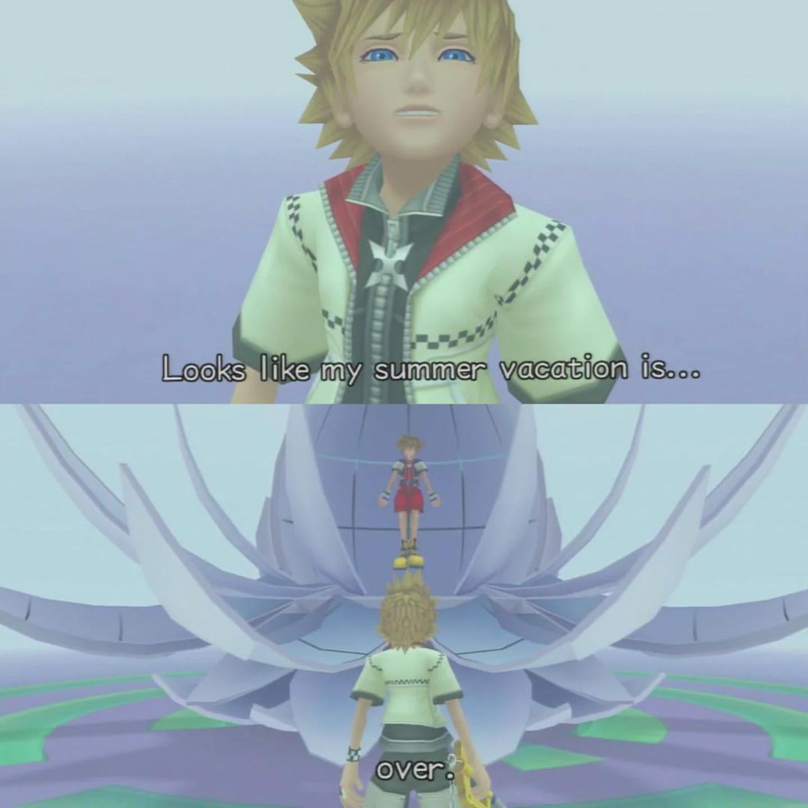
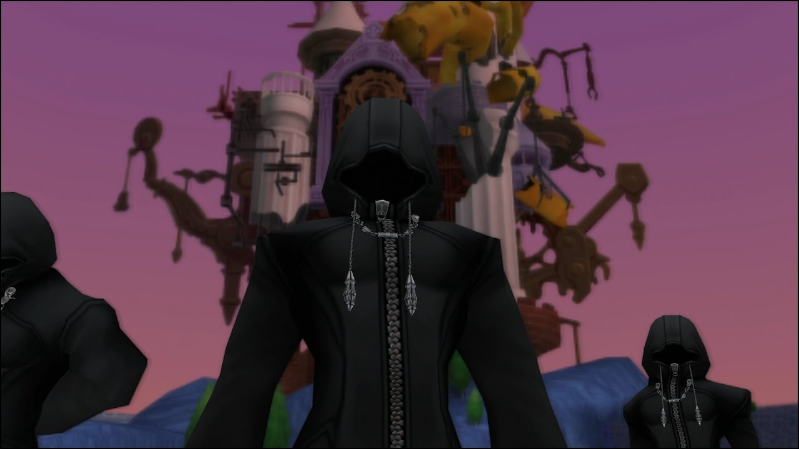
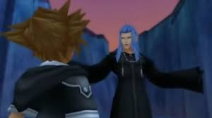

Released in 2005, Kingdom Hearts II launched on the PlayStation 2 as the series’ first numbered sequel. The game features the return of Sora, Donald, and Goofy, alongside many familiar faces and new characters.


The game starts with a character that is not Sora. Instead, the story begins with a boy named Roxas, who is enjoying the last few days of summer vacation with his group of friends in his hometown of Twilight Town. However, he has been having strange dreams about a boy named Sora.

As the days pass, increasingly strange things begin happening to him, while those around him seem hardly aware. Eventually, he meets a mysterious girl named Namine.

Namine tells him that he has a connection to Sora, that he holds a very important part of Sora within him. She also tells him that Roxas was never supposed to exist in the first place. Before she could explain more, they are interrupted by a black cloaked man.
Roxas soon discovers that he is living inside a simulation, a copy of the real Twilight Town, and he must merge with Sora, so that Sora, who had been asleep for about a year, could awaken. He tries to fight it, but eventually gives up, accepting that he must return to Sora.
Sora awakens in a strange place alongside Donald and Goofy, but can't quite recall how they got there. They search through the journal kept by their tiny companion, Jiminy Cricket, which chronicled their first adventure, but the only words remaining inside are: “Thank Namine.”

Sora and crew explore Twilight Town, before they meet Hayner, Pence, and Olete. They are then told that someone that sounded like King Mickey was looking for them at the train station. They make their way there before they are ambushed by enemies that they've never seen before, shortly before King Mickey disguised in a black cloak assists them. Instead of speaking with them, he quickly hands them a pouch filled with Munny (the in-game currency), and tells them to get on the train, before running off.

The trio heed the king, and board the train, where it takes them to a Mysterious Tower. At the top of the tower, resides Master Yen Sid, King Mickey's old teacher. He explains that while they previously stopped the Heartless, both they and a new threat known as the Nobodies have returned. Nobodies are creatures that are created when a being with a strong will loses their Heart to the Heartless. And there is a group of incredibly strong Nobodies called Organization XIII. They have retained their human form, and command the lesser Nobodies.
It is up to Sora, Donald, and Goofy to traverse the worlds again in order to fight against the Heartless and find out what the Organization is up to. They once again travel to various Disney worlds with classic characters and villains old and new. Eventually they find out that the Organization is spreading the Heartless around for Sora to destroy with the Keyblade, releasing the hearts that the Heartless have stolen, and taking those hearts to build their own Kingdom Hearts.
Sora is torn, struggling with the choice to fight the Heartless. If he doesn't then they will reap havoc across the worlds, and if he does then the Organization will profit from it. He struggles with this until he learns that the Organization has kidnapped Kairi. Resolve hardened, he and his friends continue across the worlds, searching for a way to reach the world where the Nobodies and Kairi are being held. Eventually they return to Twilight Town, where they meet King Mickey, who believes that a pathway to the Nobodies world is hidden.
They find the pathway to the world in the Digital Twilight Town, and face against the Organization on their own turf. The gang reunite with Kairi, and surprisingly Riku, who looks like the villain from the first game, until a blast of light from a failed device that was trying to turn the Nobodies’ artificial version of Kingdom Hearts into code, turned him back to his original form.

The group continue to the top where the Final Boss awaits, and after a climactic fight, most of the group enter a portal taking them home. But it closes before Sora and Riku can enter, and the villain they thought they defeated, wasn't truly defeated, and Sora and Riku fight against him in one final showdown. Once they defeat the villain, they find themselves in the Realm of Darkness. They wander through the realm until they reach a quiet beach, where they stop to rest. A message in a bottle for Sora washes up to the beach next to them, and Sora reads a heartfelt message from Kairi, before a Door to Light opens, and they are able to finally return home.

The story ends here for now, but there are still dark forces at work so the Journey isn't over yet.